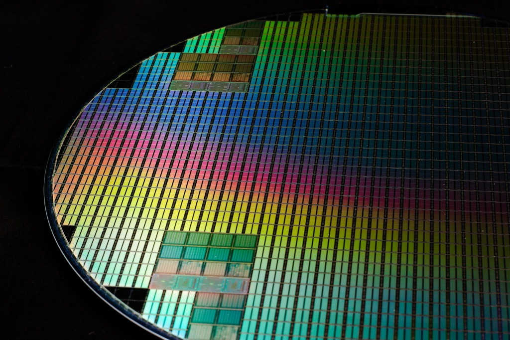
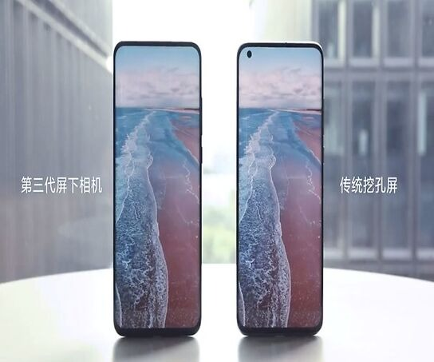
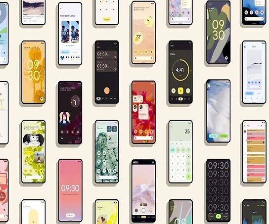

Sungsik Lee, un profesor de ingeniería electrónica de la Universidad Nacional de Pusan, en Corea del Sur, ha publicado una investigación en la que describe en el plano teórico un nuevo tipo de dispositivo electrónico capaz de llevar a cabo la función inversa de un transistor.
20 Mayo, 2022
789

Xiaomi ha mostrado hoy la que dice ser su tercera generación de tecnología de cámara bajo la pantalla, según ha publicado la marca. Lo ha hecho enseñando de nuevo un prototipo funcionando, así como una serie de detalles.
19 Mayo, 2022
1509
En 2022 los eruditos del mundo heleno lo tienen algo más fácil. Y gracias a un socio inesperado: DeepMind, el laboratorio de Alphabet que se encarga de explorar las posibilidades de la Inteligencia Artificial.
18 Mayo, 2022
611

Google ya tiene la segunda beta de Android 13. Pero la mayoría de teléfonos no tienen, ni siquiera, Android 11. La última vez que pudimos ver datos sobre la distribución de versiones en Android fue en noviembre de 2021.
17 Mayo, 2022
2297
Meta quiere dar un paso importante en el campo de la inteligencia artificial (IA). Se trata de Research SuperCluster (RSC), un sistema de investigación pensado para entrenar complejos modelos de inteligencia artificial.
16 Mayo, 2022
2167